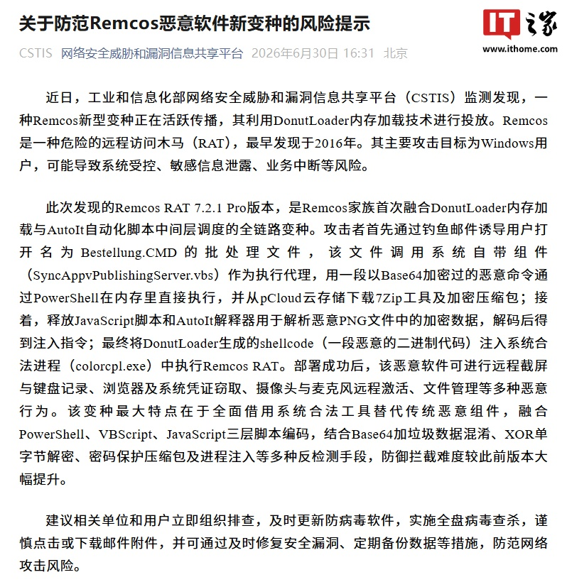

개요
IT소식에 따르면 최근 중국 공업정보화부의 네트워크 보안 위협 및 취약점 정보 공유 플랫폼(CSTIS)이 DonutLoader 메모리 로딩 기술을 활용하는 Remcos 신형 변종이 활발하게 확산되고 있음을 감지했습니다.
Remcos 개요
Remcos는 2016년에 처음 발견된 위험한 원격 제어 트로이 목마(RAT)입니다. 주요 공격 대상은 Windows 사용자이며, 시스템 제어권 탈취, 민감 정보 유출, 업무 중단 등의 위험을 초래할 수 있습니다.
신규 변종 특징
CSTIS 플랫폼에 따르면 이번에 발견된 Remcos RAT 7.2.1 Pro 버전은 Remcos 제품군 중 처음으로 DonutLoader 메모리 로딩과 AutoIt 자동화 스크립트 중간 계층 조율을 결합한 전체 경로 변종입니다.
공격 방식
공격자는 피싱 메일을 통해 사용자가 'Bestellung.CMD'라는 배치 파일을 열도록 유도합니다. 해당 파일은 시스템 내장 구성 요소(SyncAppvPublishingServer.vbs)를 실행 에이전트로 호출하며, Base64로 암호화된 악성 명령을 PowerShell을 통해 메모리에서 직접 실행하고 pCloud 클라우드 저장소에서 7Zip 도구 및 암호화된 압축 파일을 다운로드합니다.
그 후 JavaScript 스크립트와 AutoIt 인터프리터를 배포하여 악성 PNG 파일 내의 암호화된 데이터를 분석하고, 해독을 통해 주입 명령을 얻어냅니다. 최종적으로 DonutLoader가 생성한 쉘코드(악성 바이너리 코드)를 시스템의 합법적인 프로세스(colorcpl.exe)에 주입하여 Remcos RAT를 실행합니다.
악성 행위
해당 악성 소프트웨어가 성공적으로 설치되면 다음과 같은 다양한 악성 행위를 수행할 수 있습니다.
- 원격 화면 캡처 및 키로깅
- 브라우저 및 시스템 자격 증명 탈취
- 카메라 및 마이크 원격 활성화
- 파일 관리 등
방어 회피 기술
이 변종의 가장 큰 특징은 기존의 악성 구성 요소 대신 시스템의 합법적인 도구를 활용한다는 점입니다. PowerShell, VBScript, JavaScript 등 3단계 스크립트 인코딩을 결합하고, Base64에 가짜 데이터를 추가한 혼독(Obfuscation), XOR 단일 바이트 복호화, 비밀번호 보호 압축 파일 및 프로세스 주입 등 다양한 탐지 회피 수단을 사용하여 이전 버전보다 방어 및 차단이 훨씬 어렵습니다.
대응 권고
CSTIS 플랫폼은 관련 기관과 사용자들에게 즉각적인 점검을 실시하고, 백신 소프트웨어를 최신 상태로 업데이트하며 전체 디스크 바이러스 검사를 수행할 것을 권고합니다. 또한 이메일 첨부 파일을 클릭하거나 다운로드할 때 주의해야 하며, 보안 취약점을 신속히 패치하고 데이터를 정기적으로 백업하는 등의 조치를 통해 네트워크 공격 위험에 대비해야 합니다.
총평
이번에 발견된 Remcos RAT 7.2.1 Pro 변종은 DonutLoader와 AutoIt 등을 결합하여 탐지 회피 능력을 대폭 강화한 것이 특징입니다. 시스템 도구를 활용한 복잡한 인코딩과 주입 기술을 통해 보안 위협을 가하며, 사용자들에게 적극적인 보안 업데이트와 주의를 당부하고 있습니다.
威胁概况
工信部 CSTIS 平台监测到一种活跃传播的 Remcos 新型变种。该变种为 Remcos RAT 7.2.1 Pro 版本，是该家族首次融合 DonutLoader 内存加载技术与 AutoIt 自动化脚本中间层调度的全链路变种。
攻击路径与技术手段
攻击者通过钓鱼邮件诱导用户打开名为 Bestellung.CMD 的批处理文件，随后利用多种系统组件和脚本语言进行多层级混淆：
- 使用 SyncAppvPublishingServer.vbs 作为执行代理。
- 采用 Base64 加密并加入垃圾数据混淆的 PowerShell 命令在内存中直接执行。
- 从 pCloud 云存储下载 7Zip 工具及加密压缩包。
- 结合 JavaScript 和 AutoIt 解析恶意 PNG 文件中的加密数据，获取注入指令。
- 利用 DonutLoader 生成的 shellcode 注入到系统合法进程 colorcpl.exe 中运行 Remcos RAT。
恶意功能与风险
部署成功后，该恶意软件可对 Windows 用户设备执行多种高风险操作：
- 远程截屏与键盘记录。
- 浏览器及系统凭证窃取。
- 摄像头与麦克风远程激活。
- 文件管理等各类控制行为。
反检测手段
该变种的主要特点是全面借用系统合法工具替代传统恶意组件，显著提升了防御拦截难度：
- 融合 PowerShell、VBScript、JavaScript 三层脚本编码。
- 采用 Base64 加垃圾数据混淆及 XOR 单字节解密。
- 结合密码保护压缩包及进程注入等多种手段规避检测。
总结
工信部 CSTIS 监测到一种高度复杂的 Remcos RAT 7.2.1 Pro 变种，该变种融合了 DonutLoader 和 AutoIt 等技术，并利用多层脚本混淆和系统工具替代手段来规避检测。该软件具备远程控制、信息窃取及硬件激活等严重威胁，建议用户及时更新防病毒软件并警惕钓鱼邮件。
概要
ITニュースによると、中国工業情報化部のネットワークセキュリティ脅威および脆弱性情報共有プラットフォーム（CSTIS）が、DonutLoaderメモリローディング技術を活用するRemcosの新型変種が活発に拡散していることを検知しました。
Remcosの概要
Remcosは、2016年に初めて発見された危険なリモートアクセス型トロイの木馬（RAT）です。主な攻撃対象はWindowsユーザーであり、システム制御権の奪取、機密情報の流出、業務の中断などのリスクを引き起こす可能性があります。
新変種の特徴
CSTISプラットフォームによると、今回発見されたRemcos RAT 7.2.1 Proバージョンは、Remcos製品群の中で初めてDonutLoaderによるメモリローディングとAutoIt自動化スクリプトの中間層調整を組み合わせた全経路変種です。
攻撃手法
攻撃者はフィッシングメールを通じて、ユーザーに「Bestellung.CMD」というバッチファイルを開くよう誘導します。このファイルはシステム内蔵コンポーネント（SyncAppvPublishingServer.vbs）を実行エージェントとして呼び出し、Base64で暗号化された悪意のあるコマンドをPowerShellを通じてメモリ上で直接実行し、pCloudクラウドストレージから7Zipツールおよび暗号化された圧縮ファイルをダウンロードします。
その後、JavaScriptスクリプトとAutoItインタプリターを展開して、悪意のあるPNGファイル内の暗号化データを解析し、復号によって注入命令を取得します。最終的にDonutLoaderが生成したシェルコード（悪意のあるバイナリコード）をシステムの正規プロセス（colorcpl.exe）に注入してRemcos RATを実行します。
悪意のある挙動
この悪意のあるソフトウェアが正常にインストールされると、以下のような様々な悪意のある行為を実行する可能性があります。
- リモート画面キャプチャおよびキーロギング
- ブラウザおよびシステム資格情報の奪取
- カメラおよびマイクのリモート起動
- ファイル管理など
検知回避技術
この変種の最大の特徴は、既存の悪意のあるコンポーネントの代わりにシステムの正規ツールを活用する点です。PowerShell、VBScript、JavaScriptなどの3段階スクリプトエンコーディングを組み合わせ、Base16に偽のデータを追加した難読化（Obfuscation）、XOR単一バイト復号、パスワード保護された圧縮ファイル、およびプロセス注入など、多様な検知回避手段を用いるため、以前のバージョンよりも防御や遮断が非常に困難になっています。
対応推奨
CSTISプラットフォームは、関連機関およびユーザーに対し、即座の点検を実施し、アンチウイルスソフトウェアを最新の状態に更新して全ディスクスキャンを実行することを推奨しています。また、メールの添付ファイルをクリックまたはダウンロードする際の注意喚起に加え、セキュリティ脆弱性の迅速なパッチ適用やデータの定期的なバックアップなど、ネットワーク攻撃のリスクに対する対策を講じるよう求めています。
まとめ
今回発見されたRemcos RAT 7.2.1 Proは、DonutLoaderとAutoItを組み合わせることで検知回避能力を大幅に強化した変種です。システムツールを活用した複雑なエンコーディングやプロセス注入技術を用いるため、より高度なセキュリティ対策と注意が必要です。
Overview
According to IT news, the Network Security Threat and Vulnerability Information Sharing Platform (CSTIS) of the Chinese Ministry of Industry and Information Technology recently detected a new variant of Remcos that utilizes DonutLoader memory loading technology.
Remcos Overview
Remcos is a dangerous Remote Access Trojan (RAT) first discovered in 2016. It primarily targets Windows users and can lead to risks such as unauthorized system control, theft of sensitive information, and disruption of business operations.
New Variant Characteristics
According to the CSTIS platform, the newly discovered Remcos RAT version 7.2.1 Pro is the first variant in the Remcos family to combine DonutLoader memory loading with AutoIt automation script intermediate coordination as a full-path variant.
Attack Methodology
Attackers use phishing emails to trick users into opening a batch file named 'Bestellung.CMD'. This file calls an internal system component (SyncAppvPublishingServer.vbs) as an execution agent, which then executes Base64-encoded malicious commands directly in memory via PowerShell. It also downloads the 7Zip tool and encrypted files from pCloud cloud storage.
Following this, it distributes JavaScript scripts and AutoIt interpreters to analyze and decode data within a malicious PNG file to obtain injection commands. Finally, shellcode generated by DonutLoader is injected into a legitimate system process (colorcpl.exe) to execute the Remcos RAT.
Malicious Activities
Once successfully installed, the malware can perform various malicious actions:
- Remote screen capture and keylogging
- Theft of browser and system credentials
- Remote activation of camera and microphone
- File management, among other functions
Defense Evasion Techniques
The most significant feature of this variant is its use of legitimate system tools instead of traditional malicious components. It employs a combination of three-stage script encoding (PowerShell, VBScript, and JavaScript), obfuscation by adding dummy data to Base64, XOR single-byte decryption, password-protected archives, and process injection. These techniques make it significantly harder to detect and block compared to previous versions.
Response Recommendations
The CSTIS platform advises relevant organizations and users to conduct immediate inspections, update antivirus software to the latest version, and perform full disk scans. Additionally, users should exercise caution when clicking or downloading email attachments, promptly patch security vulnerabilities, and regularly back up data to prepare for network attack risks.
Overall Assessment
The newly discovered Remcos RAT 7.2.1 Pro variant is characterized by its significantly enhanced detection evasion capabilities through the integration of DonutLoader and AutoIt. By utilizing complex encoding and injection techniques involving system tools, it poses a severe security threat, prompting calls for proactive security updates and increased user vigilance.
Summary
The Remcos RAT 7.2.1 Pro variant utilizes advanced technologies like DonutLoader and AutoIt to bypass traditional security measures by hiding malicious code within legitimate system processes. It targets Windows users through phishing, enabling attackers to perform actions such as keylogging, credential theft, and remote hardware control. Experts recommend immediate security updates and cautious handling of email attachments to mitigate these risks.
威胁概述
工信部 CSTIS 平台监测到一种新型 Remcos 变种正在活跃传播。该恶意软件属于远程访问木马（RAT），主要针对 Windows 用户，可能导致系统受控、敏感信息泄露及业务中断。
技术特征与攻击路径
此次发现的 Remcos RAT 7.2.1 Pro 版本是该家族首次融合 DonutLoader 内存加载与 AutoIt 自动化脚本中间层调度的全链路变种。其攻击流程包含以下关键步骤：
- 通过钓鱼邮件诱导用户打开 Bestellung.CMD 批处理文件。
- 调用系统组件 SyncAppvPublishingServer.vbs 作为执行代理，通过 PowerShell 执行 Base64 加密后的恶意命令。
- 从 pCloud 云存储下载 7Zip 工具及加密压缩包。
- 利用 JavaScript 脚本和 AutoIt 解释器解析恶意 PNG 文件中的加密数据并获取注入指令。
- 将 DonutLoader 生成的 shellcode 注入到系统合法进程 colorcpl.exe 中执行。
功能与防御规避手段
该变种具备高度的隐蔽性和强大的攻击能力：
- 恶意行为：支持远程截屏、键盘记录、浏览器及系统凭证窃取、摄像头与麦克风远程激活以及文件管理。
- 防检测技术：全面借用系统合法工具替代传统组件，融合 PowerShell、VBScript、JavaScript 三层脚本编码；采用 Base64 加垃圾数据混淆、XOR 单字节解密、密码保护压缩包及进程注入等手段，大幅提升了防御拦截难度。
安全建议
相关单位和用户应立即组织排查，及时更新防病毒软件并进行全盘扫描。同时需警惕钓鱼邮件中的附件，通过修复系统漏洞、定期备份数据等措施降低遭受网络攻击的风险。
总结
工信部 CSTIS 监测到一种高度复杂的 Remcos RAT 7.2.1 Pro 变种，该变种融合了 DonutLoader 和 AutoIt 等技术手段以规避安全检测。该恶意软件利用多层脚本编码和系统工具进行隐蔽传播，用户需提高警惕并及时采取防护措施。
概要
ITニュースによると、中国の工信部が運営するネットワークセキュリティ脅威および脆弱性情報共有プラットフォーム（CSTIS）は、DonutLoaderメモリローディング技術を活用するRemcosの新変種が活発に拡散していることを検知しました。
Remcosの概要
Remcosは、2016年に初めて発見された危険なリモートアクセスツール（RAT）です。主な攻撃対象はWindowsユーザーであり、システム制御権の奪取、機密情報の流出、業務の中断などのリスクを引き起こす可能性があります。
新変種の特長
CSTISプラットフォームの報告によると、今回発見されたRemcos RAT 7.2.1 Proバージョンは、Remcos製品群の中で初めてDonutLoaderによるメモリローディングとAutoIt自動化スクリプトの中間層調停を組み合わせた全経路変種です。
攻撃手法
攻撃者はフィッシングメールを通じて、ユーザーに「Bestellung.CMD」というバッチファイルを開くよう誘導します。このファイルはシステム内蔵コンポーネント（SyncAppvPublishingServer.vbs）を実行エージェントとして呼び出し、Base64で暗号化された悪意のあるコマンドをPowerShellを介してメモリ上で直接実行し、pCloudクラウドストレージから7Zipツールおよび暗号化された圧縮ファイルをダウンロードします。
その後、JavaScriptスクリプトとAutoItインタプリターを配布して、悪意のあるPNGファイル内の暗号化データを解析・解読し、注入命令を取得します。最終的にDonutLoaderが生成したシェルコード（悪意のあるバイナリコード）をシステムの正当なプロセス（colorcpl.exe）に注入し、Remcos RATを実行します。
悪意のある挙動
このマルウェアが正常にインストールされると、以下のような様々な悪意のある動作を実行する可能性があります。
- 遠隔画面キャプチャおよびキーロギング
- ブラウザおよびシステムの資格情報の窃取
- カメラおよびマイクの遠隔起動
- ファイル管理など
検知回避技術
この変種の最大の特徴は、独自の悪意あるコンポーネントを使用する代わりに、システム内の正規ツールを活用する点です。PowerShell、VBScript、JavaScriptなどの3段階のスクリプトエンコーディングを組み合わせ、Base64に偽のデータを追加した難読化（Obfuscation）、XOR単一バイト復号、パスワード保護された圧縮ファイル、およびプロセス注入など、多様な検知回避手段を用いることで、以前のバージョンよりも防御や遮断が非常に困難になっています。
対応推奨事項
CSTISプラットフォームは、関係機関およびユーザーに対し、即座の点検を実施し、ウイルス対策ソフトウェアを最新の状態に更新してフルディスクスキャンを実行することを推奨しています。また、メールの添付ファイルを開く際の注意喚起に加え、セキュリティ脆弱性の迅速なパッチ適用やデータの定期的なバックアップなど、ネットワーク攻撃のリスクに対する適切な対策を講じるよう求めています。
まとめ
今回発見されたRemcos RAT 7.2.1 Proは、DonutLoaderとAutoItを組み合わせることで検知回避能力を大幅に強化した変種です。システムツールを利用した複雑なエンコーディングや注入技術により高度な脅威となっており、ユーザーには最新のセキュリティ更新と注意深い対応が求められています。
Overview
According to the CSTIS platform under China's Ministry of Industry and Information Technology, a new variant of Remcos utilizing DonutLoader memory loading technology has been detected spreading actively.
What is Remcos?
Remcos is a dangerous Remote Access Trojan (RAT) first identified in 2016. It primarily targets Windows users and can lead to risks such as unauthorized system takeover, theft of sensitive information, and disruption of operations.
New Variant Characteristics
According to the CSTIS platform, the newly discovered Remcos RAT version 7.2.1 Pro is the first variant in the Remcos family to combine DonutLoader memory loading with AutoIt automated script intermediate layer coordination as a full-path variant.
Attack Methodology
Attackers use phishing emails to trick users into opening a batch file named "Bestellung.CMD." This file calls a built-in system component (SyncAppvPublishingServer.vbs) as an execution agent, which then executes malicious commands encoded in Base64 directly in memory via PowerShell. It also downloads 7Zip tools and encrypted compressed files from pCloud cloud storage.
Subsequently, the malware deploys JavaScript scripts and AutoIt interpreters to analyze and decrypt data within a malicious PNG file. After decoding, it retrieves injection commands and injects shellcode (malicious binary code) generated by DonutLoader into a legitimate system process (colorcpl.exe) to execute the Remcos RAT.
Malicious Behaviors
Once successfully installed, the malware can perform various malicious actions:
- Remote screen capture and keylogging
- Theft of browser and system credentials
- Remote activation of camera and microphone
- File management, among other functions
Evasion Techniques
The primary characteristic of this variant is its use of legitimate system tools instead of traditional malicious components. It employs a combination of three-layer script encoding (PowerShell, VBScript, and JavaScript), obfuscation by adding dummy data to Base64 strings, XOR single-byte decryption, password-protected compressed files, and process injection. These methods make it significantly harder to detect and block compared to previous versions.
Recommendations
The CSTIS platform advises relevant organizations and users to conduct immediate checks, update antivirus software to the latest version, and perform full disk scans. Users should also exercise caution when clicking or downloading email attachments, promptly patch security vulnerabilities, and regularly back up data to prepare for network attack risks.
Summary
The Remcos RAT 7.2.1 Pro variant utilizes a sophisticated combination of DonutLoader memory loading and AutoIt automation to evade detection while targeting Windows systems. By leveraging legitimate system tools and multi-layered encoding, the malware enables attackers to perform invasive actions like keylogging and remote surveillance. Users are urged to maintain updated security software and exercise caution with email attachments to mitigate these risks.

